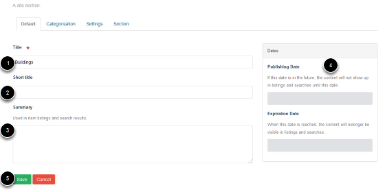

Note
these user guides are being phased out and replaced with the guides on Haiku Knowledge Base
This shows you how to add a new folder to the Image Library.
Click on Images on the right side of the top of the page.
Click on Add new... on the toolbar at the top of the page. Select Section.
Enter details of the new folder: 1. Name of the folder 2. Short title - if entered at the time of creating the folder this forms the last part of the web address 3. Summary of the folder contents (optional) 4. Ignore the publishing dates - images are automatically published.
Save the folder: 5. Click on Save.